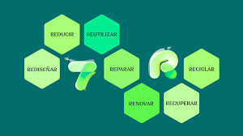

Las "7 R" del reciclaje, también conocidas como las 7 erres de la economía circular, son: Rediseñar, Reducir, Reutilizar, Reparar, Renovar, Recuperar y Reciclar. Estas R representan un enfoque más amplio y sostenible para la gestión de residuos, promoviendo una economía circular en lugar de una lineal. Aquí te explicamos cada una de ellas:
Implica crear productos pensando en su ciclo de vida completo, desde la fabricación hasta el desecho, buscando minimizar el impacto ambiental. Esto puede incluir el uso de materiales más sostenibles o la simplificación del diseño para facilitar el reciclaje.
Consiste en disminuir la cantidad de residuos que generamos, ya sea comprando menos productos, eligiendo productos con menos embalaje o utilizando productos reutilizables en lugar de desechables.
En lugar de desechar un producto, buscarle una segunda vida, ya sea dándole un nuevo uso o reparándolo para seguir utilizándolo
Arreglar productos que se han roto o estropeado en lugar de reemplazarlos por unos nuevos, extendiendo su vida útil.
Actualizar o restaurar objetos antiguos para darles una nueva utilidad, en lugar de desecharlos.
Aprovechar materiales que ya han sido utilizados para reincorporarlos al ciclo productivo, evitando que terminen en vertederos.
Reciclar es el proceso de transformar materiales usados en nuevos productos o materias primas, evitando que terminen como desechos. Esto ayuda a conservar los recursos naturales, ahorrar energía y reducir la contaminación. Es una práctica fundamental para la sostenibilidad y la protección del medio ambiente.
Ver Cartel de las 7 R's| R | Acción | Beneficio |
|---|---|---|
| Rediseñar | Diseñar productos sostenibles | Menor impacto ambiental |
| Reducir | Usar menos recursos | Menos contaminación |
| Reutilizar | Dar nuevos usos a objetos | Disminuye residuos |
| Reparar | Arreglar productos dañados | Extiende su vida útil |
| Renovar | Actualizar lo antiguo | Evita comprar nuevo |
| Recuperar | Aprovechar recursos | Reducción de desperdicio |
| Reciclar | Convertir residuos en recursos | Cierre del ciclo de vida |